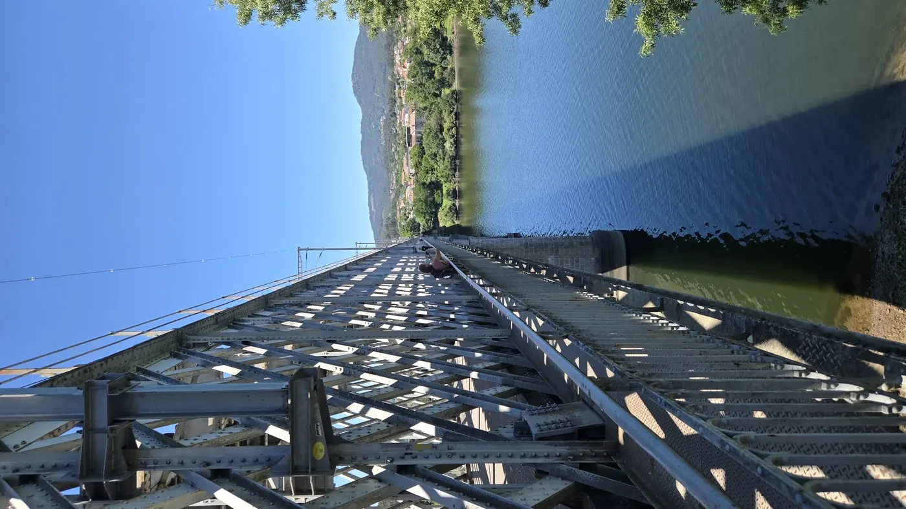
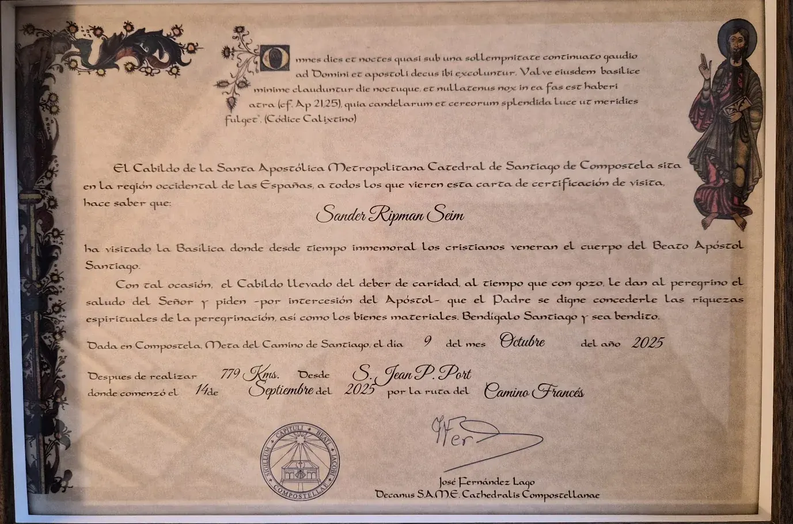

Credencial
Stempler gjør den lange reisen konkret. Ett sted, én dag, ett lite bevis på at du møtte opp.Stamps make the long journey concrete. One place, one day, one small proof that you showed up.
Ruter & etapperRoutes & stages
Distanse, rytme og delmål gir en konkret læringsbue. Temaene er metodiske forslag og kan endres av sikkerhet, dagsform og partnerbeslutninger.Distance, rhythm and milestones create a concrete learning arc. Themes are methodological suggestions and may change due to safety, day form and partner decisions.

Camino Portugués
Porto → Santiago gir en lengre læringsbue og mer tid til gruppedynamikk. Ca. 230–270 km etter valgt etappedeling, 14 vandredager pluss hvile- og styringsdager. Tui → Santiago er en kortere fallback på ca. 115 km / 8–9 dager.Porto → Santiago gives a longer learning arc and more time for group dynamics. About 230–270 km depending on stage choices, 14 walking days plus rest and control days. Tui → Santiago is a shorter fallback of about 115 km / 8–9 days.

0 → 17
Delmål og belønningerMilestones and rewards
Stempler gjør den lange reisen konkret. Ett sted, én dag, ett lite bevis på at du møtte opp.Stamps make the long journey concrete. One place, one day, one small proof that you showed up.

Et fysisk punkt for måloppnåelse – uten krav om fart eller smerte.A physical point of completion – without demands for speed or pain.

Et vakkert symbolsk diplom. Verdifull milepæl, ikke dokumentasjon på behandlingseffekt.A beautiful symbolic certificate. A meaningful milestone, not evidence of treatment effect.

Camino Francés · senere dybdesporlater depth track
Full Francés skal ikke være første deltakerpilot. Men ruten viser hvordan fysisk progresjon, monotoni, fellesskap og historiske symbolpunkter kan brukes metodisk senere.The full Francés should not be the first participant pilot. But the route shows how physical progression, monotony, community and historic symbolic points may be used methodically later.